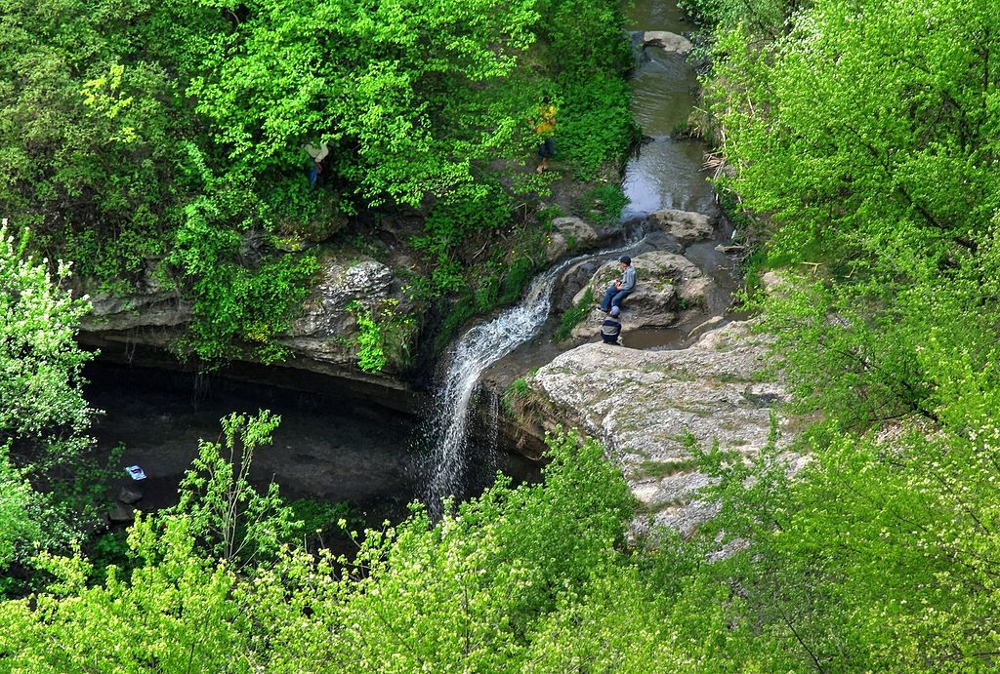
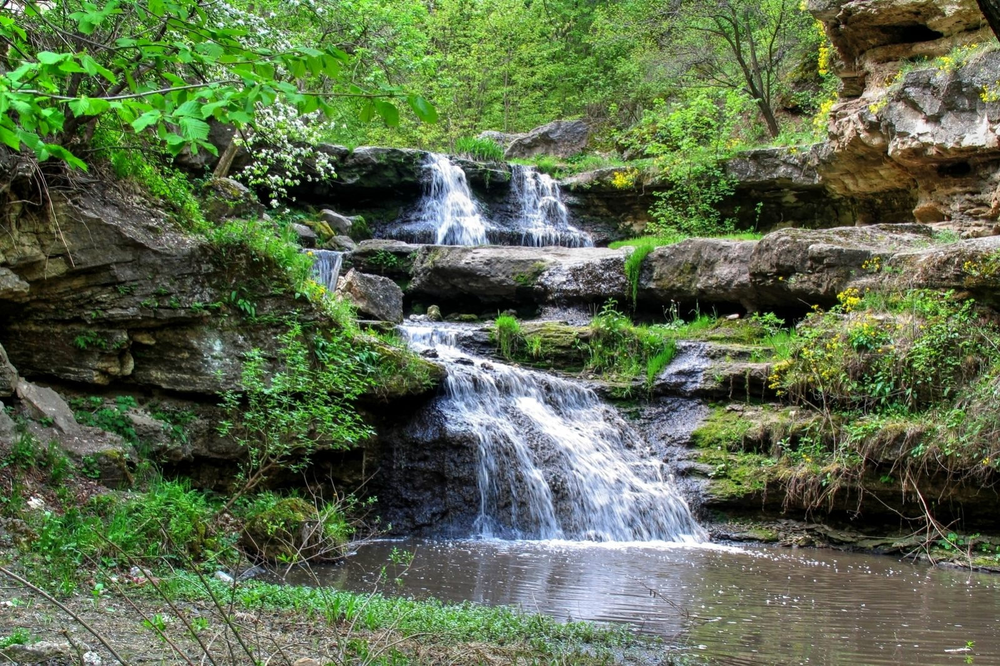

CASCADA DE LA SAHARNA
Rezervația peisagistică Saharna este situată în partea de nord-vest a satului Saharna,
pe malul drept și foarte stîncos al fluviului Nistru.

Rîulețul Saharna cu o lungime de
16 km își ia începutul la nord-vest de satul Cinișeuți, traversînd terenurile lutoaso-nisipoase ale
depunerilor sarmatice medii, iar apoi se îndreaptă printre depunerile recifo-calcaroase,
formînd în calea sa 22 de cascade (praguri).

Cea mai mare cascadă este „Groapa țiganului”,
unde apa cade de la o înălțime de 6 m, formînd o groapă cu o adîncime de circa 10 m.
Versanții defileului sînt foarte frumoși, adăpostind peșteri și grote.Un interes deosebit prezintă
fauna rezervației Saharna și anume coloniile de lilieci care numără 10 specii,
două din ele fiind introduse în Cartea Roșie a Republicii Moldova.